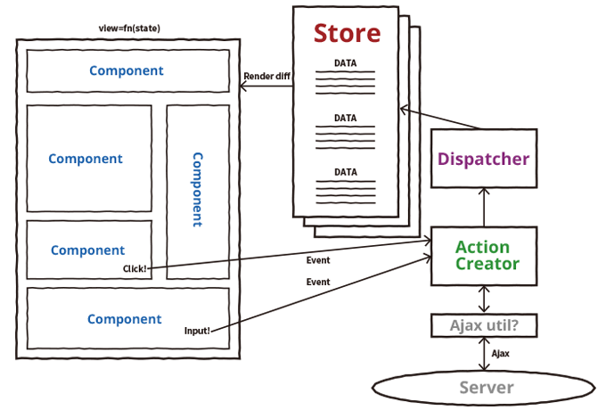

- Webサイト/Webアプリケーションの中のブラウザで動く部分
- ←→サーバサイド・バックエンド
- だいたいHTML/CSS/JavaScriptで作る
- JavaScriptがサーバからデータを取得して(Ajax)、HTMLの一部を書き換えたり
- ユーザーのアクションをもとにJavaScriptが何かしたり
背景
サーバ側でHTMLを構築して、ブラウザではそれを表示するだけだった時代
ブラウザの進化やHTML5周辺APIの誕生により、フロント側でできることが増えた
UIの改善やモバイル環境への対応のために、フロントで様々な処理をするようになった
- ES6, ES7, Babel
- gulp, webpack, CommonJS, Browserify
- Sass, PostCSS
- AWS, BaaS
- GitHub, CI, Test
- TypeScript, Flowtype
- Backbone.js
- Ember.js
- Knockout.js
- AngularJS(v1.x)
- React.js(Virtual DOM) + Flux
- Angular2
- Vue.js

特徴：コンポーネント志向・データフローを一方通行に・Virtual DOM
- データが変化したら自動的に（すべての）ビューが更新される === データとビューの乖離が起こらない
- すべてのビューの更新ではあっても、Virtual DOMによって自動的に差分のみが再レンダリングされるので、動作は重たくならない。
- データは親コンポーネントから子コンポーネントの方向にしか渡らず、子と子は疎結合。再利用やテストがやりやすい。
- MV*でModelがやっていた処理をどこでやるのかについては、明確な決まりはない。（特にReact.js）
ここまでだいぶ強引にまとめたので、
それぞれフレームワーク・ライブラリの特徴については、興味があったら調べてみてください！
MV*が適したアプリケーションももちろんあります。
そこで、できるだけ混沌を生まない記述手法が模索されてきています。
ある程度以上の規模のCSSを書くなら、どれでもいいので何かしらの手法を取り入れるのがいいと思います。個人的にはBEMです。
・・・というような分野の人たちの集まりに行ってきました
2017.02.25
Yahoo! JAPAN（東京ガーデンテラス紀尾井町）
Yahoo!の本社内でした
参加者は350人くらい（抽選）
写真は公式Twitterから拝借
- Reactはviewのみのライブラリなので、ビジネスロジックどうするか問題->現状Redux一人勝ち？
- Reactを使うと、細かい周辺ライブラリをたくさん入れる場合が多いが、ライセンスやアップデートの問題がある。
- なので、Angularのようなone large frameworkのほうが適しているケースもある。いずれにしても安易に依存を増やさないような心がけは持っておくべき。
- どんなフレームワークでも、工数はあまり変わらないのでは？
- もやもやしているところはみんなもやもやしてる、ということが分かってよかったです。
- 日経Visual Dataというサービスを作っている方のお話。
- d3.jsを使用している。それなりに時間をかけて作っている印象（データの収集・整形も入っているから）。
- d3.jsは手軽にグラフが書ける、というものではない。
- d3.jsにはブラウザがサポートしていない仕様を補完する機能はない。(!==jQuery)
- d3.jsやSVGの特性上できないものは、力技のhackのようなこともしている。・・・ということがわかって嬉しかった。
z-indexが使えないとか、テキストが折り返さないとか。
スライド：http://shimz.me/slide/inside-frontend_1/#/
- スマホのリッチ広告（動画広告とか）をやっているYahoo!の社内ベンチャーでの導入事例
- JSON Schemaとは：JSONの構造をJSONで定義。IETFに仕様がある。
- minimum,format,typeなどを定義できる。$refという参照も使える。validationに使える。
- Hyper-Schema：RESTfulAPIのエンドポイントの定義に使える。APIドキュメントの自動生成やHTTPクライアントの自動生成などができる。
- 大体の言語で使える。Rubyでも使える。prmd GEM
-
この会社では、メールのやり取りベースで広告（のhtmlタグ）を作っていた。->取引先が増えると、自動化したくなった。
AWS上で稼働するタグ発行ツールを作った。
- サーバサイドはRESTfulAPIをgolangで。フロントはNode.js,Babel,Flowtype,React+Reduxなど
- フロントとバックの連携のためのドキュメントとしてJSON Schemaを使う。
- さらにJSON SchemaをベースにAPIのモックが自動生成できるので、バックエンドの実装を待たずにフロントが作れる。
- JSON Schemaをもとに、JavaScriptでHTMLのformタグの自動生成とvalidationをする。
- JSON Schema自体は手書きなので、ちょっと大変。prmdだとymlで書ける。
- 更新時はバックとフロントで同時にリリースが必要なので、APIのバージョンとJSON Schemaのバージョンがsyncすると良さそう。
- validationも両方でかけるべきだが、JSON Schemaをベースにすれば共通のルールになる。
スライド：
http://www.slideshare.net/hiroyukianai/json-schema-in-web-frontend-insidefe